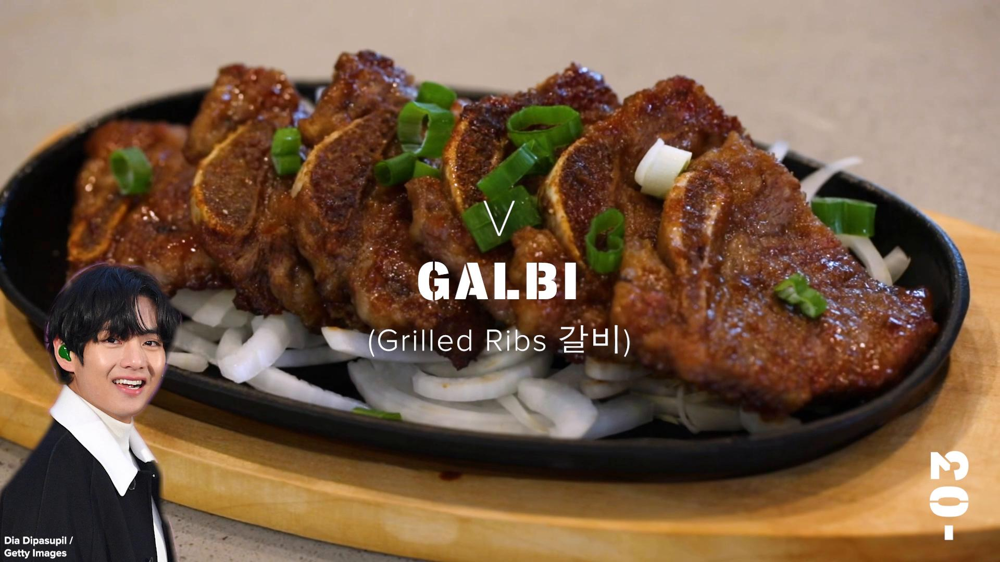

Kim Taehyung: Korean Marinated Short Ribs (Galbi)
Ingredients
Ingredients
- 2 ½ lb korean beef short ribs(1.2 kg)
- ½ asian pear, peeled, cored, and chopped
- ½ medium yellow onion, chopped, plus more thinly sliced, for serving
- 1 ½ pieces fresh ginger, peeled
- 5 cloves garlic
- ½ cup soy sauce(120 mL)
- ½ cup water(120 mL)
- ½ cup brown sugar(50 g), packed
- ¼ cup honey(85 g)
- 1 tablespoon sesame oil
- 1 tablespoon vegetable oil, plus more as needed
- 1 green onion, chopped
Preparation
- Rinse the short ribs under cold water. Soak in fresh cold water for 30 minutes to get rid of any impurities and bone fragments.
- Meanwhile, make the marinade: In a blender, combine the Asian pear, yellow onion, ginger, garlic, soy sauce, water, brown sugar, honey, and sesame oil and blend until smooth.
- Remove the short ribs from the water and pat dry. Transfer to a clean container and pour the marinade over the short ribs. Mix well to make sure the short ribs are evenly coated. Cover and marinate in the refrigerator for at least 4 hours, or overnight.
- Heat 1 tablespoon of vegetable oil in a Korean barbecue griddle, large cast iron skillet, or nonstick pan over medium heat. Working in batches to avoid overcrowding the pan, cook the short ribs until they reach your desired doneness, flipping only once to retain the moisture in the meat, 2–3 minutes per side. When the ribs are almost done cooking, cut between the bones into smaller pieces. If not using a Korean barbecue griddle, use paper towels to absorb any excess sauce as the meat cooks.
- Serve the galbi on a bed of thinly sliced yellow onion and top with the green onion.